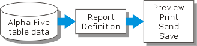
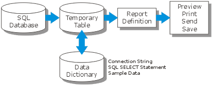

Getting Started with Enterprise Reporting
Alpha Anywhere reporting allows you to selectively retrieve records from a table, order and group them, calculate group totals, and then print the resulting report, save it to a file, or send it to a remote user as an email attachment.
Enterprise Reporting adds the ability to do all this with data that resides in an external ODBC compatible database.
How Does Enterprise Reporting Work?
To answer this question, it helps to start with the way standard Alpha Five reporting works. You use the Report Editor to define a report. When you run a report, the report engine extracts the required data from local Alpha Anywhere tables. After running the report, you can preview, print, email, or save the output.

Enterprise Reporting performs a query against the remote database and creates a temporary Alpha Five table. This table provides the data required to produce the report.

 Note : There is an
important concept to understand. It is typically much more efficient to
use the SQL database engine to select the report's data. After all, if
you need to print 1,000 records from a 1,000,000 record database, it makes
much more sense to only download the required 1,000 records, instead of
downloading the whole data set and then using your PC to discard the 99.9
percent of the data that you do not need.
Note : There is an
important concept to understand. It is typically much more efficient to
use the SQL database engine to select the report's data. After all, if
you need to print 1,000 records from a 1,000,000 record database, it makes
much more sense to only download the required 1,000 records, instead of
downloading the whole data set and then using your PC to discard the 99.9
percent of the data that you do not need.
Getting Started
Creating a SQL report and a passive link table has these steps.
Define the database connection, which may require you to define a connection string.
Define the SQL SELECT statement. If you know SQL, you can write it directly. Otherwise, the SQL Genie provides a high level interactive environment that will help you define and test your SQL query.
Save this information as a named data source.
Use the Report Editor to format and test your report with sample data.
Print your report. Alpha Five knows to automatically retrieve the complete data set before running the report.
See Also
Enterprise Reporting, Report Topics, Creating Reports